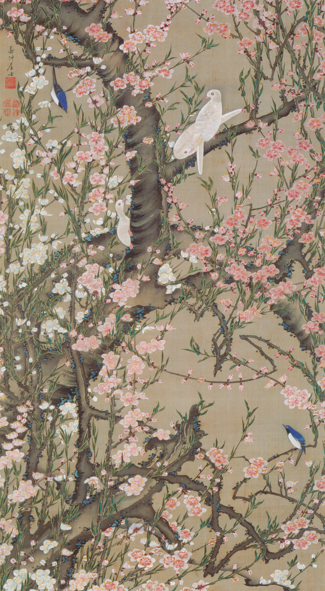

作品名 「桃花小禽図」
花言葉
「私はあなたのとりこ」「チャーミング」
「気立ての良さ」「天下無敵」
桃
「私はあなたのとりこ」
桃は古くから女性のシンボルとされており、ひな祭りには、女の子の健やかな成長を願い桃の花を飾ってきました。ひな祭りは桃の節句とも言い、春の訪れを実感させてくれる春の花です。また、中国において桃は仙木・仙果（神仙に力を与える樹木・果実の意）と呼ばれ、昔から邪気を祓い不老長寿を与える植物として親しまれています。
桃花小禽図
伊藤若冲
画面いっぱいに咲き乱れるモモの花と、モモの木の枝にいる3羽の白いハト、番の小禽が描かれています。桃の花は密集して見えるが、幹と枝が重なる部分や葉が密集している部分は隙間をあけている。花の形はほぼ同じ。花の輪郭線をぼかすことで、密集した花の群れがうるさく見えないように工夫している。
| 作品名 | 桃花小禽図 |
| 作者 | 伊藤若冲 |
| 制作年 | 1761年〜1765年 |
| 種類 | 絹本着色 一幅 |
| 寸法 | 142.6 × 79.4cm |
| 所蔵 | 宮内庁三の丸尚蔵館 |